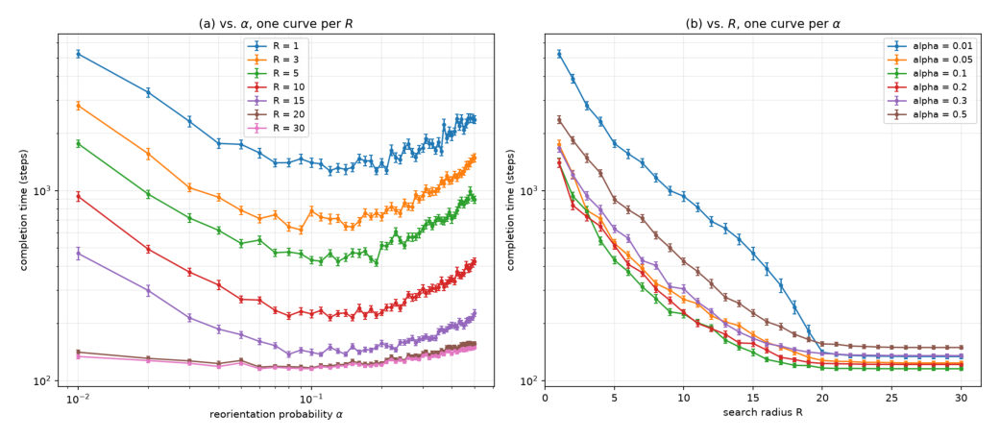
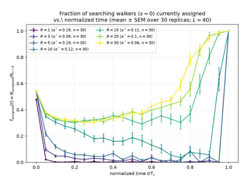

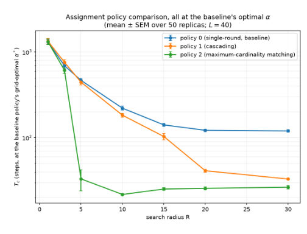
← Index · ← Previous · Next →
Authors: James Fullwood, Wu-zhong Guo, Boyu Yang
Type: theory · Category: quantum information and computing · PDF: https://arxiv.org/pdf/2608.05535v1
Analysis basis: full PDF text, analyzed in chunks
Topic relevance: entanglement & information structure 3/5 · quantum measurements 3/5 · correlated / nonlocal dissipation 2/5 · non-equilibrium dynamics 2/5 · Keldysh / 2PI / non-Gaussian methods 1/5 · driven-dissipative phase transition 1/5 · measurement-induced transitions 1/5 · methods for driven-dissipative 1/5 · non-equilibrium universality 1/5
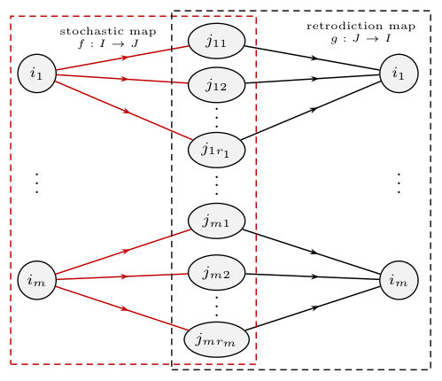
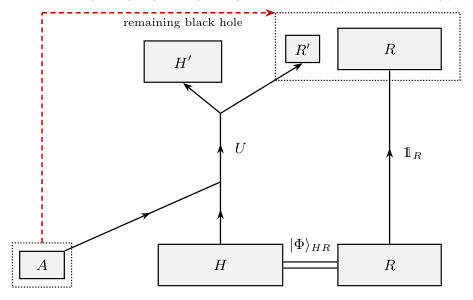
Summary. The paper develops a novel intrinsic measure of information loss for general quantum channels operating under a prepare-evolve-measure framework. It proves that zero information loss is equivalent to the channel possessing 'universal pristineness,' which mathematically guarantees perfect state recovery, mirroring the conditions required by Quantum Error Correction theory. This provides a powerful, purely channel-theoretic tool to analyze phenomena like black hole evaporation.
Why it may be interesting. This work provides a fundamental, operational measure of information degradation in open quantum systems, linking concepts from quantum error correction directly to physical processes like Hawking radiation.
Main problem. To introduce a rigorous, intrinsic measure of information loss for any quantum process modeled by a prepare-evolve-measure (PEM) scenario.
Main result. The vanishing of this intrinsic information loss is shown to be equivalent to the channel satisfying 'universal pristineness,' which in turn is mathematically equivalent to the necessary and sufficient conditions for perfect state recovery (Quantum Error Correction).
Method. The authors define information loss using conditional entropy over the PEM framework, deriving key equivalences between zero information loss, the existence of a perfect retrodiction map, and specific channel properties.
Model / system. The analysis uses general quantum channels ($\mathcal{E}$) acting on an input state $ ho$, modeled by Alice preparing an ensemble and Bob performing a POVM measurement. A key application is to the Hayden-Preskill model describing black hole evaporation.
Key observables. Intrinsic Information Loss ($K( ho, E)$), Universal Pristineness, Root Fidelity ($ ext{Fr}$), Perfect Retrodiction Map ($g$).
Important parameters / regimes. The code subspace $\mathcal{H}_{ ext{code}}$, the state $ ho$, and the channel $\mathcal{E}$.
Assumptions / limitations. The framework assumes a process modeled by the PEM scenario, and later proofs rely on established theorems like the Knill-Laflamme conditions.
Figures summary. Not specified in detail, but figures illustrate the relationship between stochastic maps, retrodiction maps, and error-free communication.
Paper structure. The paper builds from defining $K$ via entropy differences to establishing its equivalence with perfect retrodiction ($K=0 \iff g$ exists), then generalizing this to prove that zero loss implies universal pristineness, culminating in the application to black hole evaporation.
We introduce a measure of information loss for any quantum process that may be modeled by a prepare-evolve-measure scenario: Alice prepares an ensemble of states that gets sent via a quantum channel to Bob, who then measures the output. As a quantum channel models open system dynamics, our measure of information loss quantifies Bob's inability to retrodict with certainty which state Alice sent through the channel. By minimizing this measure over all possible pure state ensemble decompositions of a fixed state $ρ$, and over all POVMs on the output of a channel $\mathcal{E}$, we arrive at an intrinsic notion of information loss for any state-channel pair $(ρ,\mathcal{E})$. We show that the vanishing of information loss with respect to all states supported on a fixed codespace $\mathcal{H}_{\text{code}}$ is equivalent to a condition we term \emph{universal pristineness}, which ensures that orthogonal pure states in $\mathcal{H}_{\text{code}}$ get sent via the channel $\mathcal{E}$ to possibly mixed states whose supports are orthogonal. Moreover, we prove universal pristineness is equivalent to the Knill-Laflamme conditions in quantum error correction, which are necessary and sufficient for the existence of a perfect recovery channel for all states supported on $\mathcal{H}_{\text{code}}$. As an application, we apply our framework to the Hayden-Preskill model of black hole evaporation, demonstrating that the evaporation channel becomes asymptotically universally pristine, thereby providing a purely channel-theoretic formulation of Page-time information retrieval.
Authors: Shengbo You, Paolo Rosi, Enzo Rotunno, Alberto Roncaglia, Luca Belsito, Amir H. Tavabi, Rafal E. Dunin-Borkowski, Vincenzo Grillo, Philipp M. Pelz
Type: experiment · Category: other · PDF: https://arxiv.org/pdf/2608.05749v1
Analysis basis: full PDF text, analyzed in chunks
Topic relevance: methods for driven-dissipative 3/5 · quantum measurements 3/5 · entanglement & information structure 2/5 · interference shaping light 2/5 · measurement-induced transitions 2/5 · Keldysh / 2PI / non-Gaussian methods 1/5 · driven-dissipative phase transition 1/5 · quantum optics experiment 1/5
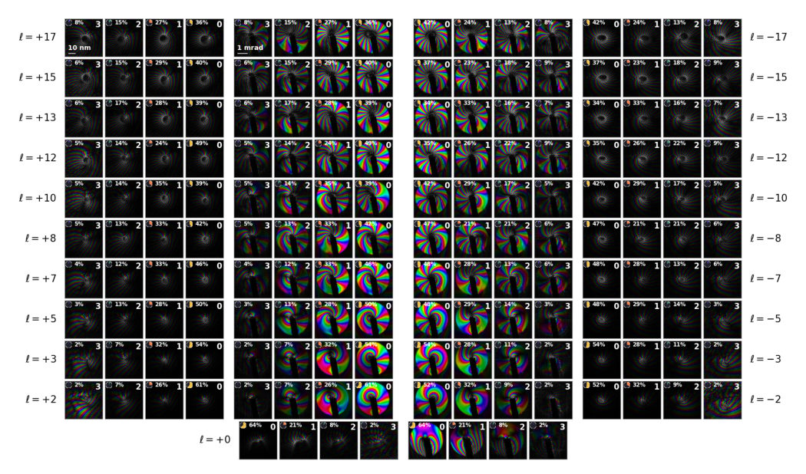
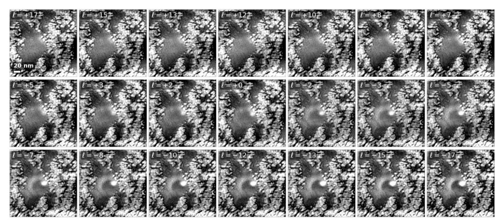
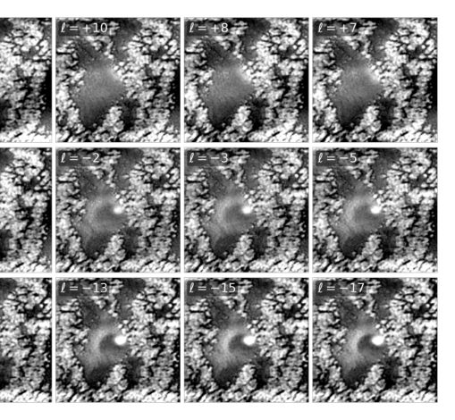
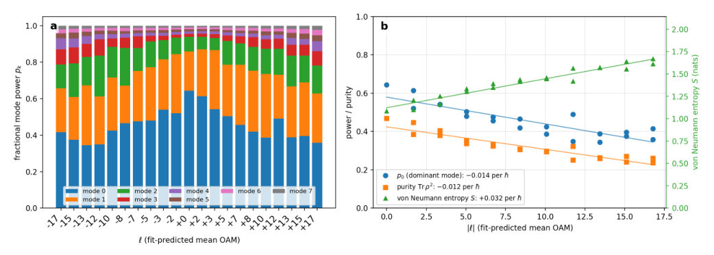
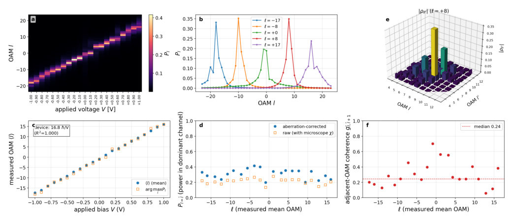
Summary. The researchers characterized the quantum state of electron beams generated by programmable electrostatic phase plates using mixed-state ptychography. They found that the delivered beam is significantly mixed, contradicting idealized assumptions used in current imaging proposals. This work provides essential, quantitative measurements of beam purity and coherence for next-generation electron optics.
Why it may be interesting. This work provides a crucial quantum characterization of an electron source used in advanced imaging, directly addressing the necessary input parameters (purity/coherence) that theoretical models often assume but fail to quantify experimentally.
Main problem. The core problem is that proposals for advanced electron microscopy techniques rely on assuming the delivered electron wave is pure and fully coherent, a property that has never been quantitatively measured.
Main result. The study successfully reconstructed the transverse density matrix of an electrostatic spiral phase plate, revealing that the delivered beam is substantially mixed, with purity dropping significantly as the applied bias increases.
Method. Mixed-state ptychography was employed using standard 4D STEM scans to reconstruct the full transverse density matrix ($ ho$) for various programmed charge states.
Model / system. The physical system is a microelectromechanical electrostatic spiral phase plate (SPP) used to generate and control electron vortex beams with tunable Orbital Angular Momentum (OAM). The analysis models the beam state using its density matrix formalism.
Key observables. Transverse density matrix ($ ho$), purity ($ ext{Tr} ho^2$), von Neumann entropy ($S$), mode powers, and spatial coherence as functions of applied bias/charge.
Important parameters / regimes. The measured purity drops from $\approx 0.47$ to $\approx 0.24$ with increasing bias; the reconstructed OAM ($\langle\ell angle$) scales linearly with voltage.
Assumptions / limitations. The primary limitation is that current diagnostics only measure diagonal elements or assume pure states, and the reconstruction technique itself relies on specific modeling assumptions regarding coherence transfer.
Figures summary. Figures show reconstructed probe modes in real space (annular intensity) and aperture plane (azimuthal winding); spectra track mode power, purity, and entropy as a function of programmed charge; one figure shows the linear calibration of mean OAM vs. voltage.
Paper structure. The paper first establishes the gap by noting unmeasured beam purity. It then details the mixed-state ptychography method applied to the SPP. Results quantify the state mixing and coherence for multiple vortex states, concluding with implications for dose efficiency improvements.
Programmable electron optics -- electronically controlled phase plates -- underpin proposals from dose-efficient phase imaging to shaped-electron X-ray sources, nearly all assuming a pure, fully coherent delivered wave whose purity has never been measured. Here we reconstruct the transverse density matrix of a microelectromechanical electrostatic spiral phase plate by mixed-state ptychography, from one four-dimensional STEM scan per state and without added hardware. The delivered beam is substantially mixed: its purity falls from approximately 0.47 to approximately 0.24 as the applied bias grows, inconsistent with a fixed lateral source-blur model, while the real-space coherence width stays near 1 nm. The same scans calibrate the device in situ, allow virtual orbital-angular-momentum sorting and, through a partial-coherence-aware transfer theory, indicate that purifying the output could improve dose efficiency roughly threefold. One acquisition thus becomes a quantum-state acceptance test for programmable electron optics, supplying the purity and coherence that emerging phase-plate and diffractive-imaging schemes assume but leave unquantified.
Authors: Ken K. W. Ma
Type: theory · Category: strongly correlated electrons · PDF: https://arxiv.org/pdf/2608.06098v1
Analysis basis: full PDF text, analyzed in chunks
Topic relevance: Keldysh / 2PI / non-Gaussian methods 3/5 · driven-dissipative phase transition 2/5 · methods for driven-dissipative 2/5 · non-equilibrium universality 2/5 · Kondo & dissipative impurity 1/5 · analog quantum simulation 1/5 · correlated / nonlocal dissipation 1/5 · correlated cavity matter 1/5 · non-equilibrium dynamics 1/5
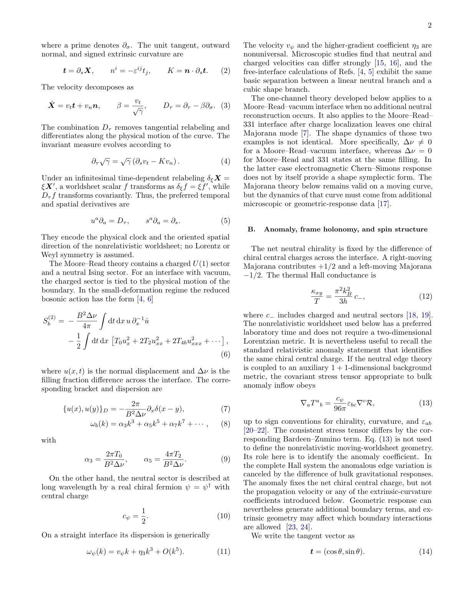
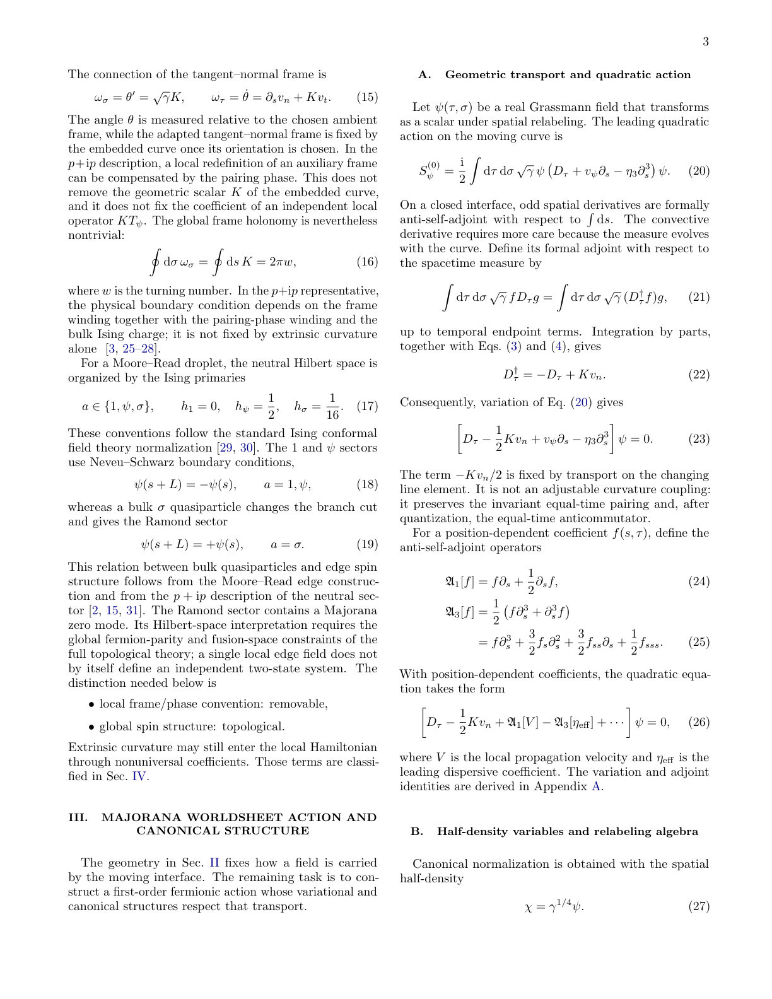
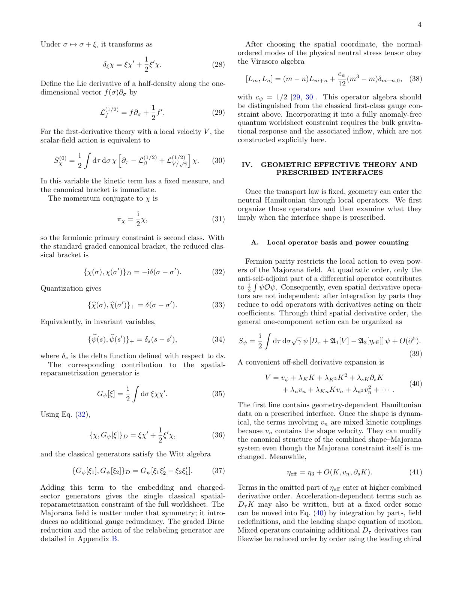
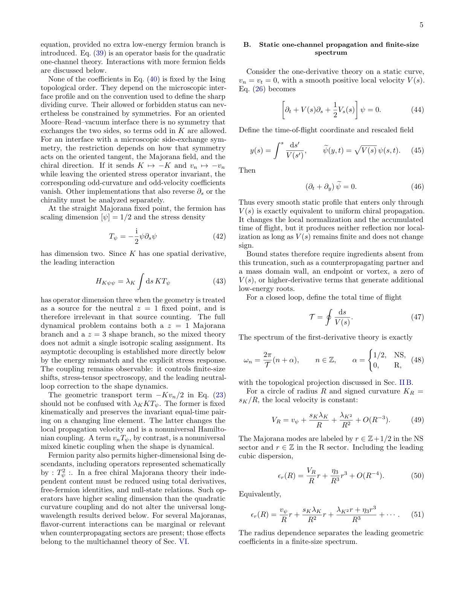
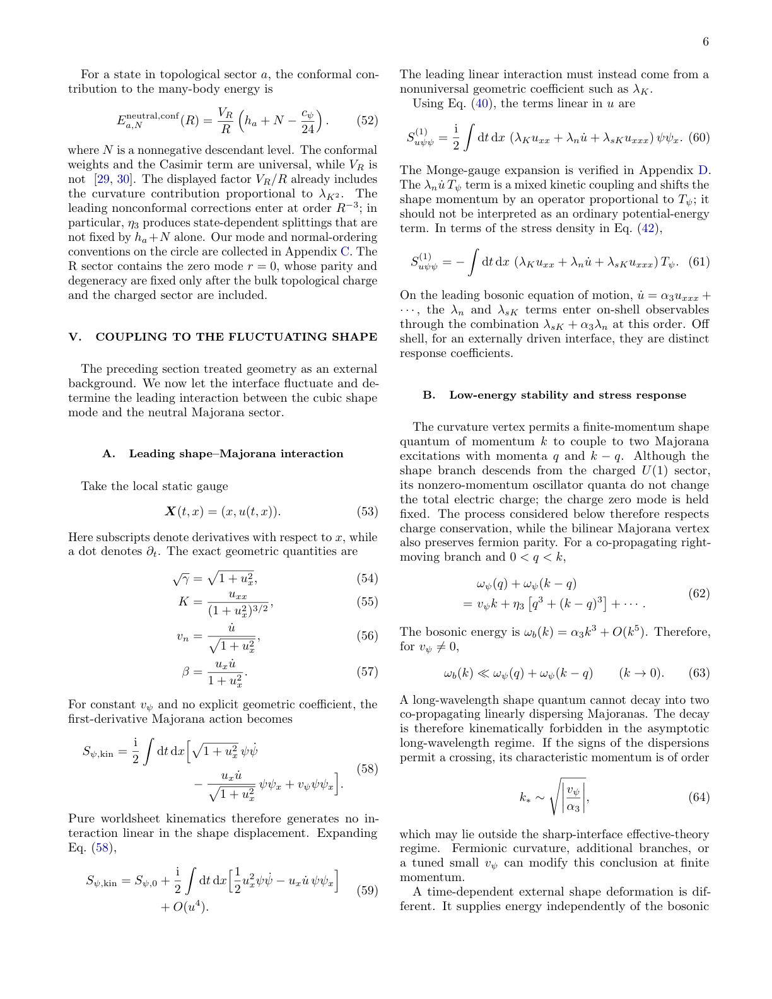
Summary. This paper develops an advanced, geometrically invariant effective string theory toolbox for Majorana fermions residing at fluctuating quantum Hall interfaces. It successfully derives the low-energy dynamics by treating the interface's movement and curvature explicitly within the fermionic action. The resulting framework is crucial for building comprehensive theories of dynamical non-Abelian edge physics.
Why it may be interesting. This work provides a powerful effective field theory toolkit for describing boundary physics in strongly correlated electron systems (like FQHE states), which is highly relevant to understanding exotic edge modes beyond simple Luttinger liquid descriptions.
Main problem. The primary goal is constructing a spatially reparametrization-invariant effective theory for chiral Majorana fermions residing on an interface whose geometry fluctuates freely.
Main result. The framework successfully separates universal kinematic transport laws from microscopic couplings, identifying the Majorana stress tensor as the mediator between neutral and geometric dynamics.
Method. The authors employ worldsheet formulations, variational principles, and canonical quantization using half-density variables to derive the effective action for the fermionic sector coupled to geometry fluctuations.
Model / system. The system models a quantum Hall interface derived from the Moore-Read (Pfaffian) state, focusing on the dynamics of its neutral chiral Majorana mode ($\psi$) as the boundary bends and moves nonrelativistically.
Key observables. Majorana stress tensor, universal half-density transport law, linear dispersion relation $\omega_\psi(k) = v_\psi k + \eta_3 k^3$, and energy contributions from curvature ($K$).
Important parameters / regimes. Curvature ($K$), shape velocity ($v_n$), local propagation velocity ($V$), and the effective coupling coefficients derived from microscopic physics.
Assumptions / limitations. The analysis assumes a nonrelativistic worldsheet, that fixed-edge theory is insufficient, and initially focuses on a single-channel description (Moore–Read–vacuum).
Paper structure. The paper builds from identifying the inadequacy of fixed-edge theories to constructing the invariant action using half-density variables, deriving equations of motion involving curvature and velocity, and finally separating universal topological contributions from geometry-dependent couplings.
A Moore--Read interface carries a chiral Majorana mode on a boundary whose geometry may itself fluctuate. Fixed-edge theory does not determine how this neutral mode should be transported when the interface bends and moves, or how its dynamics couples to the fluctuating shape. Here we construct a spatially reparametrization-invariant Majorana theory on the nonrelativistic worldsheet of a freely moving interface. The changing line element fixes a universal half-density transport law, while additional curvature- and velocity-dependent couplings remain controlled by microscopic interface physics. The resulting framework identifies the Majorana stress tensor as the mediator between neutral and geometric dynamics and provides the neutral sector needed for effective theories of dynamical non-Abelian quantum Hall interfaces.
Authors: Néstor Sepúlveda
Type: theory · Category: statistical mechanics · PDF: https://arxiv.org/pdf/2608.06084v1
Analysis basis: full PDF text, analyzed in chunks
Topic relevance: non-equilibrium dynamics 3/5 · driven-dissipative phase transition 2/5 · non-equilibrium universality 2/5 · Frenkel-Kontorova 1/5 · Keldysh / 2PI / non-Gaussian methods 1/5 · analog quantum simulation 1/5 · correlated / nonlocal dissipation 1/5 · entanglement & information structure 1/5 · methods for driven-dissipative 1/5



Summary. This paper analyzes a lattice model of active search-and-capture where mobile walkers compete for immobile targets. The core finding is that optimizing the assignment policy—specifically using maximum-cardinality matching—is a more powerful control parameter for reducing capture time than adjusting walker movement persistence. This highlights how coordination in resource allocation dictates the system's extreme-time behavior.
Why it may be interesting. While not directly quantum, the study models complex non-equilibrium dynamics involving resource competition and state transitions, which shares conceptual parallels with modeling energy landscapes or information flow in open quantum systems.
Main problem. The study investigates collective search-and-capture dynamics on a lattice, focusing on how different assignment policies affect the overall completion time ($T_c$).
Main result. The assignment policy can control $T_c$ more strongly than walker persistence ($\alpha$), with maximum-cardinality matching providing significant speedups over greedy approaches.
Method. The authors use a minimal lattice model simulation approach, comparing baseline single-round assignment against cascading reassignment and maximum-cardinality matching algorithms.
Model / system. The system is a minimal lattice model on a periodic square lattice containing mobile walkers and immobile targets. Capture occurs via an irreversible, finite-range, mutually exclusive assignment rule.
Key observables. Completion Time ($T_c$), $T_{50\%}$, $T_{90\%}$, and the instantaneous fraction of assigned walkers ($f_{ ext{assigned}}(t)$).
Important parameters / regimes. Walkers' reorientation rate ($\alpha$) and search radius ($R$).
Assumptions / limitations. The analysis focuses on extreme-value statistics, where $T_c$ is governed by the late-time tail of the capture process.
Figures summary. Figures show non-monotonic dependence of $T_c$ on $\alpha$ and plateauing behavior with increasing $R$. Figure 3 compares near-optimal completion times for different assignment policies.
Paper structure. The paper establishes the model dynamics, analyzes the effect of walker persistence ($\alpha$) on $T_c$, and then systematically compares three distinct assignment policies (single-round, cascading, max-cardinality matching) to quantify their impact on the extreme capture time.
We study a minimal lattice model of active search-and-capture in which persistent random walkers locate and irreversibly capture immobile targets through a finite-range, mutually exclusive assignment rule. We measure the collective completion time $T_c$ as a function of the walkers' reorientation rate $α$ and the search radius $R$. The dependence $T_c(α)$ is non-monotonic, with a minimum at intermediate persistence whose depth decreases as $R$ grows. Capture kinetics show that $T_c$ is not a typical capture time but is governed by the extreme, late-time tail of the capture process, while the bulk of targets are captured much earlier; this tail is controlled mainly by the free-exploration phase rather than by the final directed approach. We then compare the baseline single-round assignment rule with cascading reassignment and with maximum-cardinality matching on a candidate graph. The two greedy policies (single-round and cascading) agree at very small $R$, whereas maximum-cardinality matching already produces a strong speedup at moderate $R$: improved matching reduces $T_c$ by factors of several at large $R$, and by more than an order of magnitude at moderate $R$. Thus, in this collective, depletion-coupled search problem, the assignment policy can control the capture time more strongly than the walkers' persistence.
Authors: Andrea Di Fini, Samuel Crew, Laura Pecorari, Guido Pupillo
Type: theory · Category: quantum information and computing · PDF: https://arxiv.org/pdf/2608.06187v1
Analysis basis: full PDF text, analyzed in chunks
Topic relevance: analog quantum simulation 3/5 · quantum measurements 3/5 · measurement-induced transitions 2/5 · correlated / nonlocal dissipation 1/5 · driven-dissipative phase transition 1/5 · entanglement & information structure 1/5 · methods for driven-dissipative 1/5 · non-equilibrium dynamics 1/5
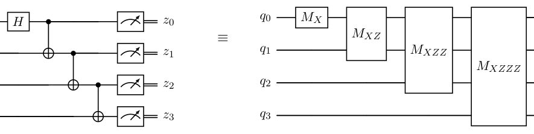
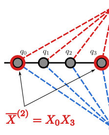
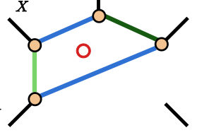
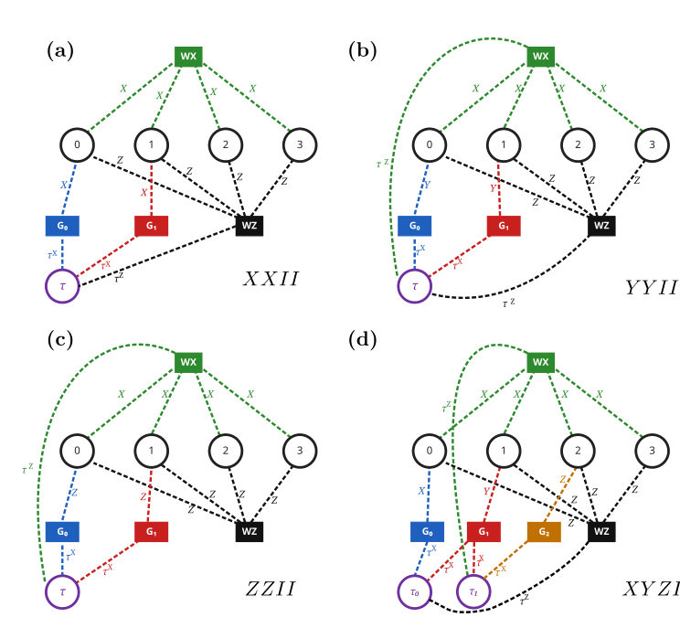
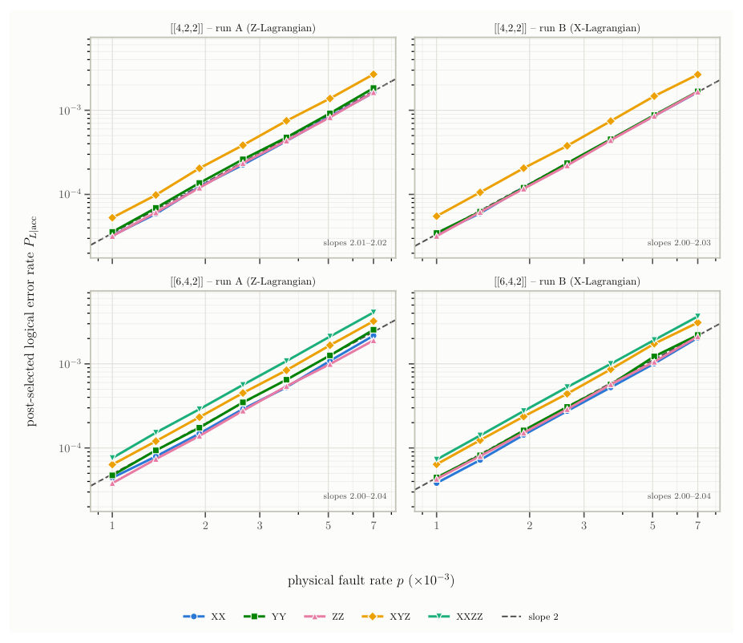
Summary. This paper presents a method called 'code surgery' to perform measurements of logical Pauli operators in fault-tolerant quantum computation using Iceberg codes. By viewing measurement as gauging a global symmetry, the authors construct explicit gadgets that are proven to be fault-detecting via simulation. This makes it a highly relevant theoretical roadmap for building complex quantum computations on next-generation hardware.
Why it may be interesting. This work directly bridges abstract quantum error correction theory (gauging symmetries) with concrete, near-term physical implementations on platforms like neutral atoms that support long-range connectivity.
Main problem. The primary goal is to develop a fault-tolerant method for measuring logical Pauli products within quantum error-correcting codes.
Main result. The authors successfully construct explicit, fault-detecting surgery gadgets for the high-rate Iceberg codes, showing that measurement can be achieved by gauging global symmetries of the code Hamiltonian.
Method. The technique involves 'code surgery,' which treats logical measurements as gauging a global symmetry. This is formalized by adjoining auxiliary qubits to make the operator local, followed by a reverse deformation process.
Model / system. The focus is on the Iceberg codes $ ext{[[2N, 2N-2, 2]]}$ and their associated Hamiltonians. The theoretical framework utilizes concepts from lattice gauge theory applied to quantum error correction.
Key observables. Fault detection requires suppressing the post-selected logical error rate by $O(p^2)$ relative to the physical error probability $p$. Key observables include the probability distribution $ ext{Pr}[\mu]$ of measurement outcomes.
Important parameters / regimes. The code parameters are $[[2N, 2N-2, 2]]$, and the construction depends on classifying logical Pauli operators into orbits under the permutation automorphism group $S_{2N}$.
Assumptions / limitations. The gadgets require reconfigurable long-range connectivity for physical implementation. The analysis relies on mapping measurements to algebraic structures defined by boundary and cycle spaces over $\mathbb{F}_2$.
Figures summary. Figure 1 illustrates the Pauli-based compilation of a GHZ gate using measurement sequences, while Figure 2 shows the physical layout structure for the Iceberg code.
Paper structure. The paper first introduces the concept via a small warm-up example (four spins), then generalizes this to the Iceberg codes by classifying logical operators into orbits. It details the gauging procedure and concludes with circuit simulations confirming fault detection.
We construct explicit error-detecting surgery gadgets---small systems of auxiliary qubits and checks---for the high-rate Iceberg codes $[[2N,2N-2,2]]$, to perform fault-detected measurements of logical Pauli products. The construction follows the perspective of surgery as the gauging of a logical operator, regarded as a symmetry of the code. We give a complete classification of logical Pauli operators under the permutation automorphism group of the Iceberg code, reducing the construction to one gadget per orbit, and we verify with circuit-level simulations that the gadgets are fault-detecting, with the expected post-selected logical error rate. The gadgets require reconfigurable long-range connectivity, available on platforms such as neutral-atom arrays, making an error-detected demonstration of Pauli-based computation a natural near-term experiment. The paper doubles as a self-contained introduction to gauging and code surgery, developed alongside a simple worked example.
Authors: Gan Liu, Yulu Liu, Qiling Luo, Zhentao Huang, Kenji Watanabe, Takashi Taniguchi, Meiyu Wang, Jinsheng Wen, Yi Lu, Xiaoxiang Xi
Type: both · Category: strongly correlated electrons · PDF: https://arxiv.org/pdf/2608.05532v1
Analysis basis: full PDF text, analyzed in chunks
Topic relevance: analog quantum simulation 3/5 · Frenkel-Kontorova 2/5 · Keldysh / 2PI / non-Gaussian methods 1/5 · Kondo & dissipative impurity 1/5 · driven-dissipative phase transition 1/5 · entanglement & information structure 1/5 · methods for driven-dissipative 1/5 · non-equilibrium dynamics 1/5 · non-equilibrium universality 1/5
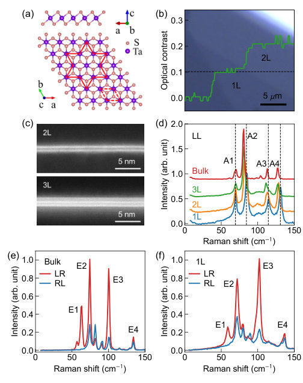
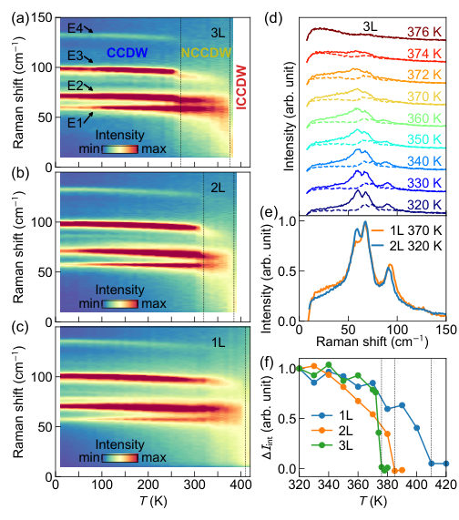
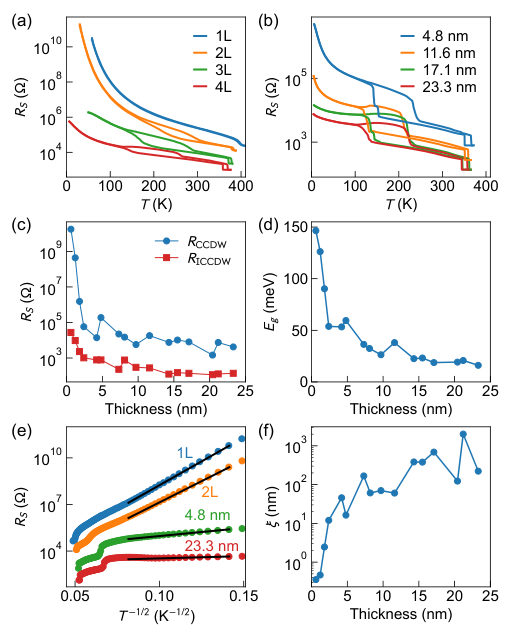
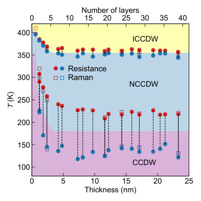
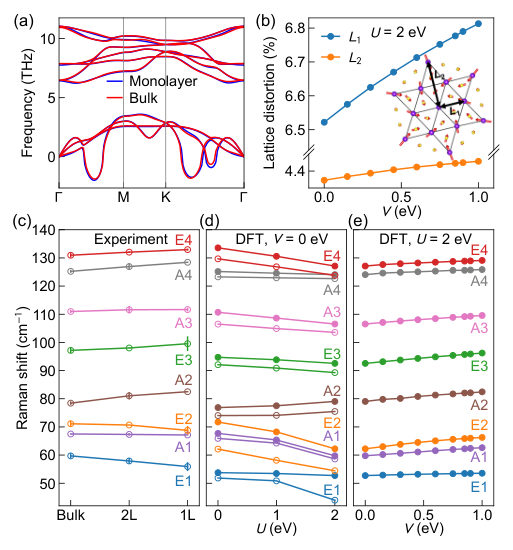
Summary. This work examines how reducing the thickness of $1T$-TaS$_2$ enhances charge-density-wave order and drives the material into a strongly correlated insulating state. By combining Raman spectroscopy and transport measurements, the authors show that reduced screening strengthens electron correlations, fundamentally altering the electronic ground state in two dimensions. This provides pathways for engineering novel correlated phases.
Why it may be interesting. While focused on solid-state physics, the strong correlation effects, phase transitions driven by dimensionality reduction, and localization phenomena are central themes in many-body physics relevant to quantum simulation platforms.
Main problem. The study investigates how charge-density-wave (CDW) transitions and correlated insulating states behave in atomically thin $1T$-TaS$_2$ as a function of thickness.
Main result. Reducing the thickness enhances CDW order due to strengthened Coulomb interactions from reduced out-of-plane screening, leading to increased transition temperatures and strong carrier localization.
Method. The research combines temperature-dependent Raman spectroscopy and electrical transport measurements with theoretical calculations (DFT) to probe electronic structure changes.
Model / system. The physical system is atomically thin $1T$-TaS$_2$, a layered transition-metal dichalcogenide known for its CDW formation, which drives metal-insulator transitions. The analysis focuses on the interplay between electron correlation and interlayer coupling.
Key observables. CDW phases (IC-CDW, NC-CDW, CCDW), transition temperatures ($T_{CDW}$), sheet resistance, carrier localization length ($\xi$), and phonon modes.
Important parameters / regimes. Thickness (down to monolayer limit), Coulomb interaction strength ($U$ and $V$), and temperature.
Assumptions / limitations. The enhanced CDW is attributed to strengthened nonlocal Coulomb interactions due to reduced out-of-plane screening; interlayer coupling is crucial for the first-order nature of certain transitions.
Figures summary. Figures show thickness-dependent Raman spectra confirming CDW phases persist down to monolayer, and transport measurements illustrating orders-of-magnitude increases in resistance and sharp decreases in localization length with decreasing thickness.
Paper structure. The paper systematically presents experimental evidence (Raman/Transport) showing thickness dependence of CDW transitions, followed by theoretical interpretation linking these changes to enhanced Coulomb interactions and screening effects.
We investigate thickness-dependent charge-density-wave (CDW) transitions in 1$T$-TaS$_2$ using temperature-dependent Raman spectroscopy and electrical transport. Raman measurements show that the incommensurate, nearly commensurate, and commensurate CDW phases persist down to the monolayer limit. As the thickness is reduced, the transition temperatures increase, accompanied by an orders-of-magnitude rise in sheet resistance and a sharp reduction in the carrier localization length. The first-order hysteretic CCDW-NCCDW transition is uniquely absent in the monolayer. Calculations suggest that the enhanced CDW in thin layers originates from strengthened Coulomb interactions due to reduced out-of-plane screening, particularly in the nonlocal component. These findings highlight the cooperative roles of electron correlation, electron-phonon interaction, and interlayer coupling in shaping the ground state and transition dynamics of atomically thin 1$T$-TaS$_2$, opening pathways for engineering correlated phases in two-dimensional CDW systems.
Authors: Rudik Badalyan, Khachatur G. Nazaryan, Tigran A. Sedrakyan
Type: theory · Category: disordered systems and neural networks · PDF: https://arxiv.org/pdf/2608.06168v1
Analysis basis: full PDF text, analyzed in chunks
Topic relevance: analog quantum simulation 3/5 · methods for driven-dissipative 3/5 · Keldysh / 2PI / non-Gaussian methods 1/5 · driven-dissipative phase transition 1/5 · entanglement & information structure 1/5 · exotic spin models in light-matter 1/5 · non-equilibrium dynamics 1/5
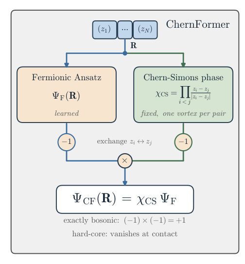
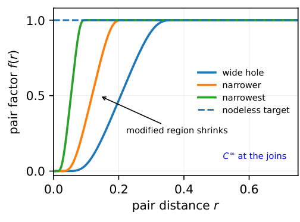
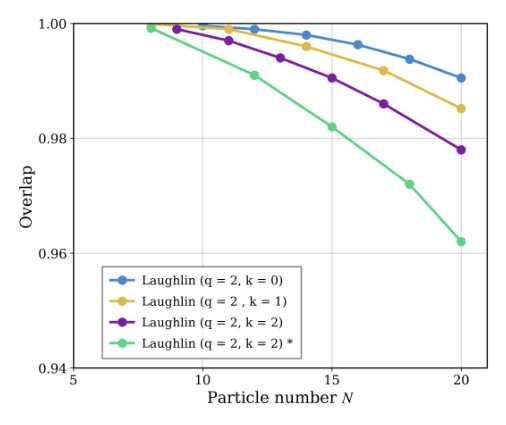
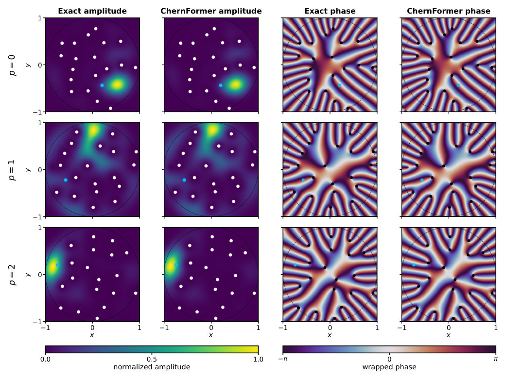
Summary. The paper introduces ChernFormer, a novel neural network architecture designed to represent bosonic wave functions by combining a fermionic backbone with a fixed topological phase factor. This structure allows the network to simultaneously capture both conventional condensate behavior and complex chiral topological order. It demonstrates that this single variational language is powerful enough to accurately model these distinct quantum phases.
Why it may be interesting. This work bridges advanced concepts from topology (Chern-Simons theory, winding numbers) directly into modern machine learning architectures, providing a powerful new toolset for simulating strongly correlated quantum phases that are difficult to model classically or with standard neural network ansatze.
Main problem. The core problem is determining if a single, unified neural network architecture can accurately represent diverse physical phases in bosonic quantum matter, ranging from simple Bose condensates to complex chiral topological liquids.
Main result. The proposed ChernFormer successfully provides one variational language capable of approximating both conventional bosonic order and the distinct characteristics of chiral topological matter by explicitly incorporating a fixed Chern-Simons phase.
Method. The authors introduce ChernFormer, which combines a trainable fermionic backbone (enforcing anti-symmetry) with a fixed Chern-Simons phase factor. This product is engineered to be exactly bosonic while allowing the network to learn correlations and topology separately.
Model / system. The study focuses on bosonic matter in two dimensions, testing its ability to represent states like the Bose-Einstein condensate, the Kalmeyer–Laughlin ground state, and fractional Chern insulators exhibiting chiral edge modes.
Key observables. Overlap curves with known exact states, independent amplitude and phase maps revealing local/collective vortices, and the global winding number characterizing topological sectors.
Important parameters / regimes. Particle number (N), system size (plane geometry), and the fixed Chern-Simons flux attachment parameter.
Assumptions / limitations. The architecture assumes that bosonic wave functions can be mapped to an equivalent fermionic representation via a fixed, non-trainable topological phase factor. Convergence proofs rely on specific regularization schemes for density matrices.
Figures summary. Figures illustrate the concept of a 'shrinking contact hole' in smooth finite ChernFormer models when particles approach each other, showing how the function vanishes smoothly while approaching a nodeless condensate limit.
Paper structure. The paper develops the mathematical framework by defining the bosonic-equivalent fermionic ansatz (ChernFormer), proving its equivalence to learning on the inverse-transmuted target state. It then validates this structure by testing it against known topological states and analyzing convergence properties for macroscopic observables like the condensate fraction.
Can one neural wave function describe both a Bose condensate and a chiral topological liquid? We introduce ChernFormer, which combines a fermionic transformer with a fixed Chern-Simons phase that attaches one statistical vortex to every particle pair. Each factor changes sign under exchange, so their product is exactly bosonic. The fixed phase changes statistics but not probability, making every bosonic learning problem equivalent to a fermionic one with the same approximation error and overlap. With enough capacity, ChernFormer can approximate any normalizable bosonic wave function on the plane at fixed particle number. A finite, smooth network still vanishes when particles meet, yet this contact hole can shrink while the wave function and condensate fraction approach those of a nodeless condensate. Following the needle-in-a-haystack target-reconstruction benchmark introduced in \cite{NazaryanGaggioliTengFu2025}, we test ChernFormer on the Kalmeyer--Laughlin ground state and its first two chiral edge states. The overlap curves stay close to unity through their largest sampled sizes, while independent amplitude and phase maps at $N=20$ for all three states recover both local Laughlin vortices and the collective edge vortex. By contrast, a continuous, nonzero product of identical particle-wise factors misses these elementary edge sectors. ChernFormer therefore provides one variational language for conventional bosonic order and chiral topological matter.
Authors: Kenan Qu
Type: theory · Category: other · PDF: https://arxiv.org/pdf/2608.06289v1
Analysis basis: full PDF text, analyzed in chunks
Topic relevance: Keldysh / 2PI / non-Gaussian methods 3/5 · methods for driven-dissipative 3/5 · non-equilibrium dynamics 2/5 · correlated / nonlocal dissipation 1/5 · driven-dissipative phase transition 1/5 · interference shaping light 1/5
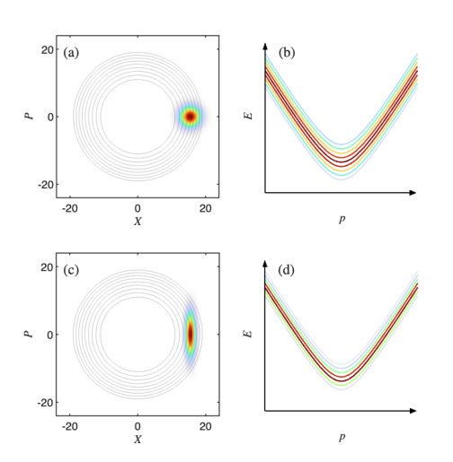
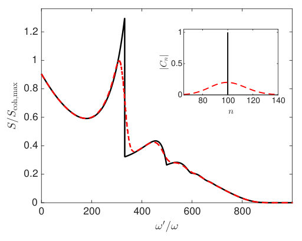
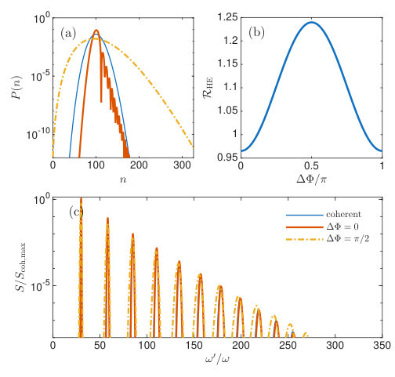
Summary. This paper presents a fully quantized theory of Nonlinear Compton Scattering, moving beyond classical treatments by incorporating pump depletion and quantum correlations. By using exact quantum states, the authors predict unique spectral features like sharp cutoffs and show how squeezing the input light fundamentally alters the high-energy photon emission spectrum.
Why it may be interesting. This work is highly relevant to open quantum systems and quantum optics as it provides a rigorous framework for calculating nonlinear processes where the driving field itself must be treated quantum mechanically, going beyond standard semi-classical approximations.
Main problem. The paper develops a fully quantized theory for Nonlinear Compton Scattering (NLC) driven by an intense, single-mode quantum pump field.
Main result. It shows that retaining full quantization effects leads to observable features like discrete photon-transfer edges and spectral cutoffs, which are absent in classical or semi-classical treatments.
Method. The theory employs a Furry picture split, utilizing exact quantum-Volkov states derived from the Hamiltonian, and analyzing results via Wigner-function weighted averages.
Model / system. The system models a relativistic electron scattering off an intense electromagnetic plane wave (pump field) while emitting photons into a continuum radiation field. The formalism handles pump depletion and final-state correlations explicitly.
Key observables. Discrete photon-transfer edges, terminal spectral cutoff, high-energy emission yield (RHE), and the dependence of these on squeezing angles ($\Delta\Phi$).
Important parameters / regimes. Pump depletion level, squeezing angle ($\Delta\Phi$), polarization type (circular vs. linear), and the ratio of emitted to pump photons.
Assumptions / limitations. The analysis often relies on the undepleted-pump approximation for certain calculations, though the full theory addresses depletion; it assumes a single monochromatic plane wave mode.
Figures summary. Figures illustrate phase-space representations (Wigner function) and show how the photon number distribution ($P_n$) and high-energy yield ($ ext{RHE}$) change depending on whether the pump is coherent or squeezed, particularly showing spectral redistribution based on $\Delta\Phi$.
Paper structure. The paper builds from defining the full quantized Hamiltonian in the Furry picture to deriving quantum-Volkov states for different polarizations. It then compares results derived from exact state evolution against approximations like the Wigner function average, culminating in analyzing spectral features based on pump squeezing.
We develop a fully quantized theory of nonlinear Compton scattering driven by a single-mode quantum field. Exact quantum-Volkov states retain pump depletion, back-action, and final-state correlations through displaced or squeezed-displaced Fock-state ladders. A finite Fock-state pump produces discrete photon-transfer edges and a terminal spectral cutoff. In the bright, weakly depleted regime, the exact theory reduces to a Wigner-function weighted-average of scattering probabilities evaluated at fixed complex field amplitudes, with ordinary and generalized Bessel functions describing the harmonic structure for circular and linear polarization, respectively. For squeezed coherent light, the squeezing angle controls the high-energy emission through photon-number fluctuations.
Authors: Mashrab E. Akramov, Jambul R. Yusupov, Matthias Ehrhardt, Davron U. Matrasulov
Type: theory · Category: other · PDF: https://arxiv.org/pdf/2608.05338v1
Analysis basis: full PDF text, analyzed in chunks
Topic relevance: methods for driven-dissipative 3/5 · driven-dissipative phase transition 2/5 · non-equilibrium dynamics 2/5 · Frenkel-Kontorova 1/5 · Keldysh / 2PI / non-Gaussian methods 1/5 · analog quantum simulation 1/5 · correlated / nonlocal dissipation 1/5
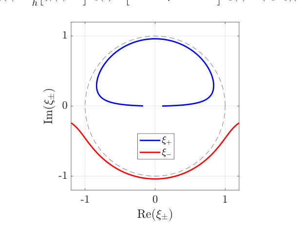
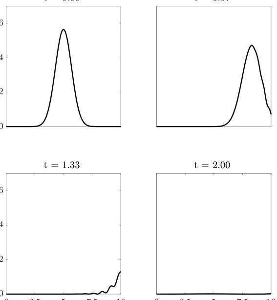
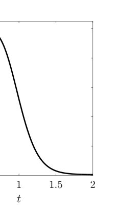
Summary. This paper constructs exact transparent boundary conditions (TBCs) for the spatially discrete Schrödinger equation modeling 1D quantum lattices. By utilizing Laplace transforms and solving the characteristic equation, the authors derive a convolution-type TBC that ensures reflectionless quantum transport. The method is validated numerically to show perfect wave packet exit without spurious backscattering.
Why it may be interesting. This work provides a highly rigorous and mathematically exact framework for absorbing boundaries in discrete quantum systems, which is crucial for simulating open quantum systems or wave propagation in engineered lattices without artificial reflections.
Main problem. The primary goal is to develop mathematically exact transparent boundary conditions (TBCs) for simulating quantum wave propagation on finite, discrete lattices.
Main result. The derived TBCs successfully eliminate spurious backscattering and preserve reflectionless transport of a Gaussian wave packet exiting the computational domain in numerical tests.
Method. The authors derive the TBC by analytically solving the spatially discrete Schrödinger equation using Laplace transforms and matching boundary conditions (Dirichlet-to-Neumann map).
Model / system. The model is a one-dimensional quantum lattice governed by the time-continuous, spatially discrete Schrödinger equation. The method rigorously checks consistency with its continuous counterpart in the continuum limit.
Key observables. The decay of the discrete norm M(t) over time, which should monotonically decrease to zero as the wave packet exits the domain.
Important parameters / regimes. The lattice spacing parameter (h), and the boundary index J defining the finite computational domain.
Assumptions / limitations. The derivation relies on using an exact analytical solution for the discrete Schrödinger equation, providing a mathematical advantage over methods that approximate continuous boundaries.
Figures summary. Figure 1 shows complex plane trajectories confirming the physical admissibility of the derived root $\xi_+(s)$. Figure 2 and 3 show numerical verification of stable propagation and monotonic decay of the wave packet norm, respectively.
Paper structure. The paper follows a theoretical derivation path: first establishing the problem setup via the discrete Schrödinger equation; then applying Laplace transforms to derive the TBC in the frequency domain; subsequently performing inverse Laplace transforms using Bessel functions to obtain the time-domain condition; finally, implementing and testing this condition numerically with standard solvers.
We construct exact transparent boundary conditions (TBCs) for a time-continuous, spatially discrete Schrödinger equation that models a one-dimensional quantum lattice. Using a recently developed exact solution for the discrete system, we derive the Dirichlet-to-Neumann maps analytically via Laplace transforms. This yields a convolution-type boundary condition governed by Bessel functions. We rigorously demonstrate the consistency of this discrete formulation with its continuous counterpart in the continuum limit. Additionally, we present an efficient time-discretization scheme based on the trapezoidal rule for practical implementation. Numerical experiments using a Crank-Nicolson solver verify that our proposed TBCs eliminate spurious backscattering entirely and preserve reflectionless propagation of a Gaussian wave packet exiting the computational domain
Authors: Yuntai Song, Zejun Liu, Zhencheng Wang, Jong Yeon Lee, Bowen Shi
Type: theory · Category: quantum information and computing · PDF: https://arxiv.org/pdf/2608.06258v1
Analysis basis: full PDF text, analyzed in chunks
Topic relevance: entanglement & information structure 3/5 · Keldysh / 2PI / non-Gaussian methods 1/5 · analog quantum simulation 1/5 · correlated / nonlocal dissipation 1/5 · driven-dissipative phase transition 1/5 · methods for driven-dissipative 1/5 · non-equilibrium dynamics 1/5 · non-equilibrium universality 1/5
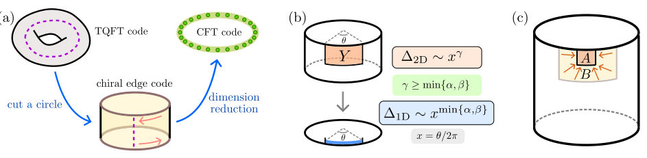
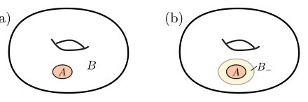
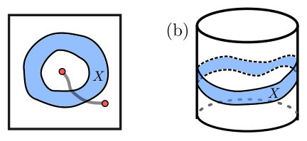
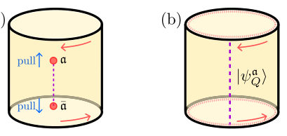
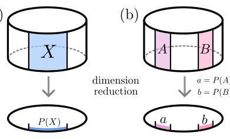
Summary. This paper introduces and analyzes approximate quantum error correction codes realized by the chiral edges of 2D topologically ordered phases. By quantifying information loss using coherent information, the authors demonstrate that these 2D edge codes are highly robust, surpassing their simpler 1D CFT counterparts in resisting local errors. This advances the understanding of how topological protection can be harnessed for practical quantum computation.
Why it may be interesting. This work provides concrete theoretical tools to assess error resilience in exotic quantum states found at boundaries of topological materials, linking bulk topology directly to information processing capabilities.
Main problem. The goal is to develop and characterize Approximate Quantum Error Correction (AQEC) codes that leverage the inherent robustness of gapped topological phases while incorporating the flexibility provided by gapless edge conformal field theories.
Main result. The 2D chiral edge code was shown to be at least as robust against local erasures as its dimensionally reduced 1D CFT counterpart, exhibiting a quantifiable power-law scaling for information loss.
Method. The analysis involves studying coherent-information loss under local erasure and deriving an exact relationship between this loss and relative entropy, reducing the problem to universal properties of the edge theory.
Model / system. The study focuses on chiral edges arising from two-dimensional topologically ordered phases. These systems combine a gapped topological bulk with gapless edge conformal field theories (CFTs).
Key observables. Coherent-information loss ($\Delta(A; V)$), which quantifies logical information leaked to the erased region, and associated power-law scaling exponents.
Important parameters / regimes. The size of the erased region ($x$), the gap structure (gapped bulk vs. gapless edge), and the type of erasure (local).
Assumptions / limitations. Key assumptions include dimensional reduction relating 2D diagnostics to 1D CFT properties, and relying on topological-sector orthogonality for mathematical simplification.
Figures summary. Figure 1 summarizes results comparing coherent information loss between the 2D chiral edge code and the 1D CFT code; Figure 2 illustrates the definition of $\Delta(A; V)$ in terms of system regions.
Paper structure. The paper progresses by establishing the physical model (chiral edges), developing the diagnostic tool ($\Delta$ via relative entropy), deriving scaling laws, proving the robustness hierarchy ($\gamma \geq \alpha$), and finally constructing a power-law recovery map for Abelian subspaces.
Topologically ordered phases naturally realize quantum error correction through nonlocal encoding of quantum information. More recently, conformal field theories have been shown to realize approximate quantum error-correcting codes, but such constructions generally require fine tuning to criticality. Here we introduce a family of approximate quantum error-correcting codes realized by the chiral edges of two-dimensional topologically ordered phases. The proposed encoding combines the robustness of a gapped topological bulk with the flexibility of gapless edge conformal field theories. To characterize its robustness, we study coherent-information loss under local erasure. We derive an exact expression relating coherent-information loss to relative entropy, reducing the recoverability problem to universal properties of the edge theory. This leads to power-law scaling of coherent-information loss with the size of the erased region. We further show that, for geometrically local erasures near one edge, the two-dimensional chiral edge code is at least as robust as the dimensionally reduced CFT code, and is strictly more robust in several representative examples. For Abelian code subspaces, we further construct a power-law-range recovery map supported on the erased region together with a power-law-range buffer; this recovery map depends only on the code subspace, not on the unknown encoded state. We provide numerical calculations for lattice realizations of compact free boson and Ising CFT examples that support the theoretical predictions of the power-law exponents.
Authors: Weiyuan Gong, Hong-Ye Hu
Type: theory · Category: quantum information and computing · PDF: https://arxiv.org/pdf/2608.05686v1
Analysis basis: full PDF text, analyzed in chunks
Topic relevance: methods for driven-dissipative 3/5 · quantum measurements 3/5 · measurement-induced transitions 2/5 · Keldysh / 2PI / non-Gaussian methods 1/5 · driven-dissipative phase transition 1/5
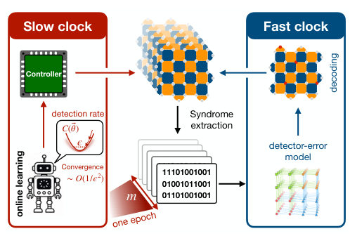
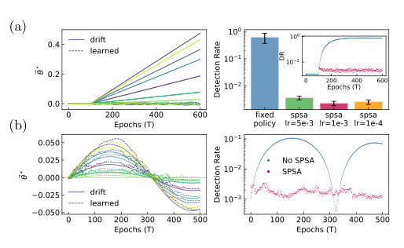
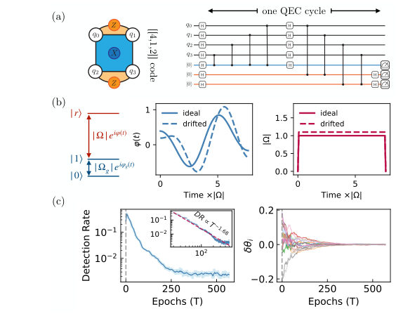
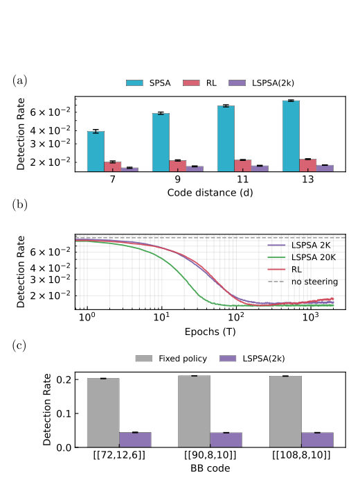
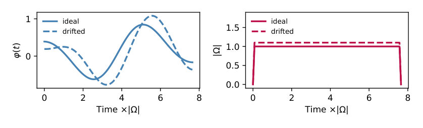
Summary. This paper introduces a theoretical framework for self-calibrating quantum fault tolerance, solving the practical problem of continuous control parameter drift. By proving that syndrome measurements yield a locally strongly convex objective function, they enable efficient online optimization to stabilize hardware while simultaneously protecting encoded quantum information. This establishes a provably efficient paradigm for future large-scale quantum computation.
Why it may be interesting. It provides a concrete, mathematically rigorous pathway to maintaining high fidelity in long-running quantum computations by integrating hardware calibration directly into the error correction cycle itself.
Main problem. The core challenge is developing a theoretically rigorous framework for self-calibrating quantum fault tolerance, allowing continuous hardware stabilization without interrupting computation.
Main result. Self-calibrating fault tolerance is established as a provably efficient paradigm where syndrome measurements simultaneously protect logical information and stabilize the underlying hardware.
Method. The authors establish that the detector-event rate defines a locally strongly convex surrogate objective, enabling efficient online optimization using only syndrome measurements collected during normal error correction.
Model / system. The work applies to quantum processors controlled by analog parameters (e.g., pulse amplitudes) undergoing environmental drift, utilizing Quantum Error Correction (QEC) codes like LDPC codes for simulation validation.
Key observables. Detection rate ($C(\vec{ heta})$), which serves as the surrogate objective function for calibration; convergence rates $O(1/\epsilon^2)$.
Important parameters / regimes. Time-independent and time-dependent drift rates ($\epsilon$); code distance (independence proven for LDPC codes).
Assumptions / limitations. The analysis assumes that the detector signal defines a locally restoring optimization landscape, and convergence relies on the local strong convexity of the objective function.
Figures summary. Figure 1 illustrates the closed loop: Syndrome stream $ ightarrow$ Decoding (protects logic) AND Feedback Signal $ ightarrow$ Update drifting analog control parameters (Calibration).
Paper structure. The paper builds a theoretical framework by proving local strong convexity of the detector-event rate, deriving convergence guarantees for both time-independent and time-dependent drifts using online convex optimization, and validating these results with pulse-level simulations.
Quantum error correction protects logical information only when every physical operation remains below the fault-tolerance threshold, a condition that must be maintained continuously rather than only at the initial calibration. In practice, however, analog control parameters inevitably drift because of environmental fluctuations. As future fault-tolerant quantum computations are expected to run for days or even months, interrupting computation for repeated recalibration becomes fundamentally impractical. A promising alternative is to integrate calibration directly into computation by repurposing syndrome measurements as a calibration signal (Sivak et al, Nature 2026), but whether such self-calibration can be achieved with provable efficiency remains an open question. Here we establish a theoretical framework for self-calibrating quantum fault tolerance. We prove that, for a broad class of control-induced errors, the detection rate defines a locally strongly convex surrogate objective for analog calibration with high probability. This geometric property enables efficient online optimization using only syndrome measurements collected during normal error correction. We prove convergence to an $\varepsilon$ detection rate within $O(1/\varepsilon^2)$ epochs for time-independent drifts and also establish guarantees for time-dependent drifts. We further show that the convergence rate is independent of the code distance for quantum low-density parity-check (LDPC) codes. Pulse-level simulations of neutral-atom arrays and large-scale circuit-level Clifford simulations confirm these theoretical predictions. Our results establish self-calibrating fault tolerance as a provably efficient paradigm in which the same syndrome measurements simultaneously protect logical information and stabilize the underlying hardware.
Authors: Shiling Liang, Ruicheng Bao
Type: theory · Category: statistical mechanics · PDF: https://arxiv.org/pdf/2608.06368v1
Analysis basis: full PDF text, analyzed in chunks
Topic relevance: non-equilibrium universality 3/5 · non-equilibrium dynamics 2/5 · Keldysh / 2PI / non-Gaussian methods 1/5 · correlated / nonlocal dissipation 1/5 · driven-dissipative phase transition 1/5 · methods for driven-dissipative 1/5
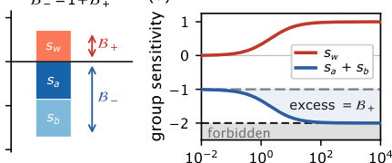
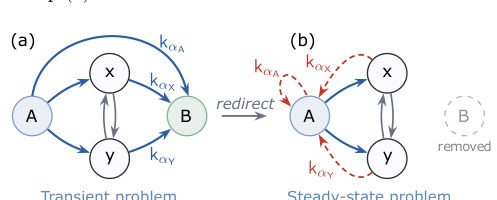
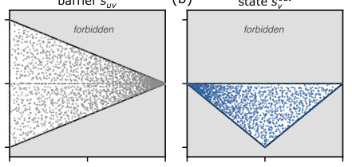
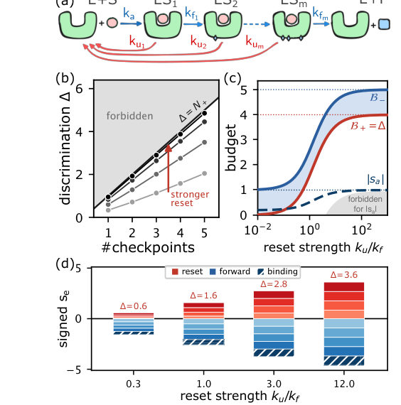
Summary. The paper derives a 'Universal Control Budget' that constrains how the mean first-passage time of any Markov process can be controlled by changing reaction rates. It shows that speeding up completion via some reactions must be compensated by slowing down others, establishing fundamental limits on kinetic control mechanisms like molecular discrimination.
Why it may be interesting. This work provides a powerful mathematical constraint on non-equilibrium dynamics, which is highly relevant for understanding rate control in complex biological or chemical systems modeled by master equations.
Main problem. To establish a general, universal constraint—a 'control budget'—governing how the mean first-passage time (MFPT) of any finite Markov chain responds to changes in its microscopic reaction rates.
Main result. The sensitivities of the MFPT with respect to individual rates are governed by two laws: a local unit bound ($|s_e| \le 1$) and a global summation rule ($\sum s_e = -1$), forming a conserved control budget that dictates how rate changes must be compensated.
Method. The analysis maps the transient first-passage problem to an equivalent steady-state current, allowing the application of established response theory for Markov jump processes to derive sensitivity identities and bounds.
Model / system. The model is a continuous-time Markov jump process on a finite state space with a source state (A) and an absorbing target state (B). Applications include kinetic proofreading mechanisms like T-cell antigen recognition.
Key observables. Mean First-Passage Time ($ au_{A o B}$), Rate Sensitivities ($s_e$), Speeding/Delaying Budgets ($\mathbf{B}+, \mathbf{B}-$), and Discrimination Gain ($\Delta$).
Important parameters / regimes. The checkpoint count, substrate concentration sensitivity, and the ratio of forward to reset rates in proofreading.
Assumptions / limitations. The system is modeled as a finite Markov chain with positive rates; the analysis relies on mapping $ au_{A o B}$ to the reciprocal of a stationary current ($ ilde{j}_{A o B}$).
Figures summary. Figures illustrate the two response laws (local bound and global sum) using simple chains, demonstrate the mathematical 'redirection' from transient to steady-state currents, and show budget spending in kinetic proofreading.
Paper structure. The paper develops the general sensitivity framework by deriving the local and global summation rules. It then applies this budget concept to specific physical scenarios, notably analyzing how discrimination gain ($\Delta$) in kinetic proofreading is constrained by these universal bounds.
The first-passage time is the natural observable of reaction completion, yet how its mean responds to a rate change has lacked a general constraint. We show that the logarithmic sensitivity of the mean first-passage time of any finite Markov chain to any rate is bounded by one in magnitude, and that these sensitivities sum to -1. Together the two laws form a conserved control budget: speeding completion through some transitions must be paid for by others, and a coordinated change shifts the completion time only as far as the budget allows. Raising an activation barrier or shifting the depth of a well moves many rates at once, yet neither can shift the completion time further than a single rate could. The budget caps kinetic-proofreading discrimination at the checkpoint count, and prices it in sensitivity to substrate concentration.
Authors: Randy Davila, Gerard J. Milburn
Type: theory · Category: other · PDF: https://arxiv.org/pdf/2608.05972v1
Analysis basis: full PDF text, analyzed in chunks
Topic relevance: correlated / nonlocal dissipation 3/5 · methods for driven-dissipative 2/5 · quantum measurements 2/5 · Keldysh / 2PI / non-Gaussian methods 1/5 · driven-dissipative phase transition 1/5
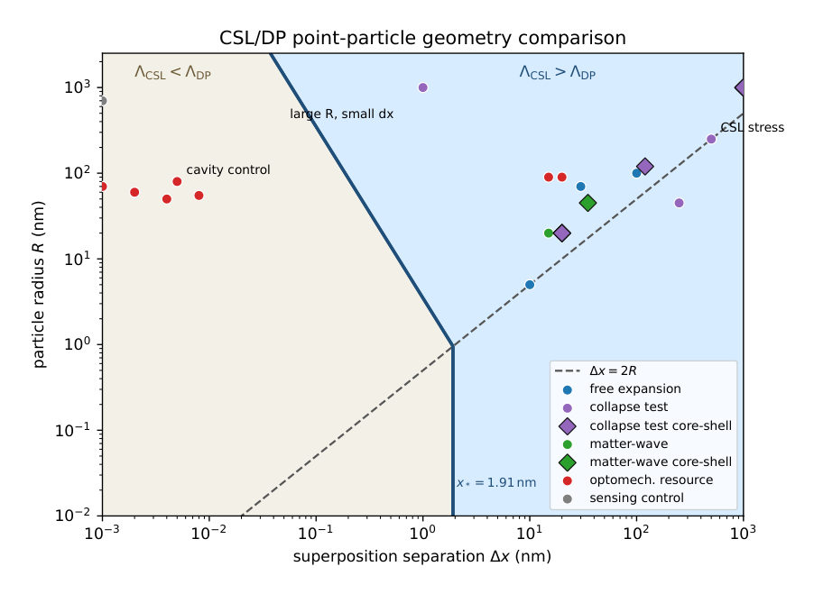
Summary. This paper theoretically compares the decoherence predictions of Continuous Spontaneous Localization (CSL) and Diósi–Penrose (DP) theories using massive particle superpositions. The key finding is that the ratio between their respective exponents simplifies to a geometry-only factor, independent of mass or time. This provides a powerful framework for designing experiments capable of distinguishing between these fundamental models of quantum gravity effects.
Why it may be interesting. This work provides rigorous theoretical tools to compare competing objective collapse models (CSL vs DP) by reducing their comparison to purely geometric ratios, which is crucial for designing future high-precision quantum experiments in AMO physics.
Main problem. The paper compares two theoretical predictions for decoherence—Continuous Spontaneous Localization (CSL) and Diósi–Penrose (DP)—by analyzing the ratio of their respective contrast-loss exponents.
Main result. The ratio of these exponents ($\Xi_{ ext{CSL/DP}}$) is found to be independent of particle mass and interrogation time, depending only on geometric factors derived from the superposition separation and particle shape.
Method. The authors use theoretical derivations involving master equations, random-unitary realizations, and Fourier analysis applied to finite spherical density profiles to establish conversion theorems between the two decoherence models.
Model / system. The study focuses on idealized levitated protocols creating spatial superpositions of massive test particles, modeled using point-particle approximations and generalized to rigid spherically symmetric bodies with arbitrary mass profiles.
Key observables. The dimensionless ratio $\Xi_{ ext{CSL/DP}}$ (the ratio of CSL and DP exponents), the resolved-superposition crossover distance ($x^*$), and the profile amplification factor $A_{\varrho}$.
Important parameters / regimes. Branch separation ($\Delta x$), particle radius ($R$), interrogation time ($ au$), CSL localization length ($r_C$), and the geometry factor derived from mass distribution.
Assumptions / limitations. The analysis assumes that ensemble visibility loss is equivalent to decoherence, but cautions that this does not prove objective collapse because pure states remain pure conditioned on the full kick record.
Figures summary. Figures numerically evaluate the identity relating CSL and DP derived exponents for various protocols and plot how the ratio changes based on geometry factors for different mass profiles.
Paper structure. The paper progresses by first establishing the point-particle case, proving the random-unitary realization of CSL. It then generalizes this to finite spherical bodies using Fourier analysis to derive a universal conversion theorem for the exponent ratio, concluding with discussions on experimental observability and limitations.
We study idealized levitated protocols that create spatial superpositions of massive test particles. For each protocol, we compare the dimensionless contrast-loss exponent of mass-proportional continuous spontaneous localization (CSL) with the Diósi--Penrose (DP) self-energy exponent $E_Gτ/\hbar$. We first prove that the point-particle CSL separation kernel has an exact random-unitary realization: Gaussian momentum kicks arriving at Poisson-distributed times produce the same unconditional decay of spatial coherence, although a pure state conditioned on the complete kick record remains pure. The separation kernel alone therefore specifies an operational decoherence law, not the occurrence of objective collapse. We then show that the ratio of the CSL and DP exponents is independent of particle mass and interrogation time. In the point-particle model it depends only on branch separation and an effective distance; for the standard GRW reference parameters, its resolved-superposition crossover is $x_*\approx1.91\,\mathrm{nm}$. For rigid spherical bodies with an arbitrary normalized radial mass profile, total mass, overall density scale, and interrogation time again cancel, leaving a dimensionless geometry factor. The results distinguish three requirements for a decisive experiment: detectable absolute effects, a controlled comparison of CSL and DP scales, and observables capable of discriminating physically different dynamics that share the same ensemble decoherence kernel.
Authors: Pratyay Ghosh
Type: both · Category: strongly correlated electrons · PDF: https://arxiv.org/pdf/2608.05927v1
Analysis basis: full PDF text, analyzed in chunks
Topic relevance: Keldysh / 2PI / non-Gaussian methods 3/5 · analog quantum simulation 2/5 · methods for driven-dissipative 2/5 · exotic spin models in light-matter 1/5 · non-equilibrium dynamics 1/5
Summary. This work explores the complex ground state structure of hard-core bosons on the square-kagome lattice using an advanced hierarchical mean-field theory. By systematically enlarging the variational cluster, the authors uncover a hierarchy of previously unknown incompressible phases, including a robust $\rho=3/4$ state. These theoretical findings are validated by predicting additional magnetization plateaus in real superconducting materials.
Why it may be interesting. The use of a highly correlated lattice model (SKL) combined with advanced mean-field techniques to predict novel quantum phases and compare them directly against experimental magnetic measurements makes this highly relevant for condensed matter theorists studying strongly interacting quantum magnets.
Main problem. The study investigates the complex landscape of incompressible crystal states supported by hard-core bosons on the square-kagome lattice (SKL), aiming to find phases beyond those predicted by simple unit-cell descriptions.
Main result. By employing hierarchical mean-field theory with larger variational clusters, the authors discovered additional robust incompressible phases, notably at density $\rho=3/4$, which map to half-magnetization plateaus in related spin models.
Method. The primary method is Hierarchical Mean-Field Theory (HMFT), which systematically increases the size of the variational cluster beyond conventional limits to capture richer correlation effects.
Model / system. The system is a hard-core boson model on the SKL, mathematically mapped onto an effective spin-$1/2$ XXZ model via the Matsubara-Matsuda transformation. The analysis involves comparing theoretical predictions with magnetization data from real cuprate compounds.
Key observables. Incompressible crystal densities ($\rho$), magnetization plateaus ($m/m_s$), and local particle densities ($n_i$).
Important parameters / regimes. Boson hopping ($t$), interaction strength ($V$), chemical potential ($\mu$), and the size of the variational cluster (12-site up to 24-site).
Assumptions / limitations. The analysis relies on mapping the bosonic system to a spin model, and the HMFT approach approximates inter-cluster correlations while treating intra-cluster physics exactly.
Figures summary. Figures illustrate the geometries of compact localized states (CLS) and show phase diagrams derived from calculations using 12-site and 24-site clusters, mapping out incompressible regions.
Paper structure. The paper first introduces the model and HMFT. It then demonstrates that increasing cluster size reveals new incompressible phases beyond the conventional two known phases ($\rho=5/6$ and $\rho=2/3$). Finally, it applies this framework to predict magnetization plateaus in specific, experimentally relevant superconducting compounds.
We investigate a hard-core boson model on the square-kagome lattice using hierarchical mean-field theory beyond the conventional unit-cell description. We show that the conventional description of the square-kagome lattice based on its smallest unit cell does not fully capture the hierarchy of incompressible states supported by the lattice, but only captures the two compact-localized-state-based phases at densities $5/6$ and $2/3$. Within our approach, we reproduce these previously established phases and uncover additional incompressible states enabled by enlarging the variational cluster. Among these, the $ρ=3/4$ phase is found to be particularly robust, which, through the Matsubara-Matsuda mapping, corresponds to a half-magnetization plateau in the spin-$1/2$ XXZ model. We further apply our approach to two experimentally relevant square-kagome compounds using exchange parameters obtained from first-principles calculations. The calculated magnetization processes are in good agreement with available experimental results and predict additional plateau structures in these materials.
Authors: John B. DeBrota, Christopher A. Fuchs, Rüdiger Schack
Type: theory · Category: other · PDF: https://arxiv.org/pdf/2608.05368v1
Analysis basis: full PDF text, analyzed in chunks
Topic relevance: quantum measurements 3/5 · measurement-induced transitions 2/5 · Keldysh / 2PI / non-Gaussian methods 1/5 · correlated / nonlocal dissipation 1/5 · driven-dissipative phase transition 1/5 · entanglement & information structure 1/5
Summary. This paper tackles the foundational challenge of reconciling QBism's personalist view of quantum mechanics with modern physics results suggesting that objective spacetime coordinates may not exist. The authors argue that locality must therefore be understood as an individual agent's causal structure and pattern of belief updates, allowing QM to remain local even when global spacetime assumptions fail.
Why it may be interesting. While not directly about AMO systems, its deep dive into the foundations of quantum theory's relationship with spacetime is crucial for any theoretical physicist considering quantum gravity or open system dynamics where background independence is paramount.
Main problem. The paper addresses how QBism, a personalist interpretation of quantum mechanics, can maintain a purely local understanding despite recent theorems suggesting that distinct observers' measurement outcomes cannot be embedded in a single spacetime.
Main result. QBism maintains locality by grounding it not in shared objective spacetimes, but in the individual agent's causal structure and sequence of personal judgments (epistemic localization).
Method. The authors use conceptual analysis, comparing QBism's tenets against established theorems (like Pienaar's) and analyzing the implications of rejecting the 'Absoluteness of Observed Events.'
Model / system. The system is Quantum Mechanics analyzed through the philosophical lens of QBism. The model involves considering multiple independent agents (observers) interacting with quantum systems.
Key observables. Quantum correlations, CHSH quantity bound, and adherence to relativistic locality constraints on an agent's beliefs.
Important parameters / regimes. The distinction between objective spacetime reality versus the subjective structure of individual experience/belief updates.
Assumptions / limitations. The core assumption is that quantum theory describes decision-making processes (Bayesian updating) for an individual, and locality must be preserved at this personal level.
Figures summary. Figures illustrate probabilistic constraints on an agent's beliefs under locality in QBism and depict the full experimental scenario using each agent's personal causal diagram.
Paper structure. The paper progresses by first identifying the conflict posed by modern theorems regarding spacetime embedding, then arguing that QBism must redefine locality as fundamentally epistemic (agent-specific), and finally showing how this preserves relativistic constraints.
Recently Pienaar (2026), building on work of Cavalcanti (2021), has shown that QBism cannot always assume distinct observers' quantum-measurement outcomes---say, of Wigner and his friend---are embedded in a single spacetime. This follows from QBism's rejection of the Absoluteness of Observed Events' assumption in the Bong et al. no-go theorem. Thus, QBism has no choice but to treat the notion of spacetime every bit as personalistic as it treats quantum states and quantum measurement outcomes. In a way, this is not a surprise to QBists, as they have taken the notion ofpersonalist spacetimes' to be the ansatz most compatible with their other views since at least 2009. But it does enjoin us to finally make crystal clear the sense in which QBism is a purely local interpretation of quantum mechanics despite this new theorem and despite quantum theory's age-old violation of Bell's inequalities. With the extra clarity we also hope to poise QBism for a distinctly new way to approach issues at the interface of quantum theory and gravity.
Authors: Takahiro Iwagaki, Hideki Matsuoka, Ginta Hoshino, Kanata Watanabe, Shungo Aoyagi, Shunsuke Kitou, Yuiga Nakamura, Motoaki Hirayama, Takashi Koretsune, Naoya Kanazawa
Type: both · Category: strongly correlated electrons · PDF: https://arxiv.org/pdf/2608.05887v1
Analysis basis: full PDF text, analyzed in chunks
Topic relevance: spintronics-quantum-optics interface 3/5 · Kondo & dissipative impurity 1/5 · analog quantum simulation 1/5 · exotic spin models in light-matter 1/5 · non-equilibrium dynamics 1/5
Summary. This work investigates how strong electron correlations can stabilize topological polarization in the narrow-gap insulator $ ext{FeSb}_2$. By combining DFT+DMFT calculations with transport measurements, the authors prove that polar surface states emerge due to bulk orbital reconstruction. This establishes a powerful design principle for engineering correlated topological materials.
Why it may be interesting. The explicit link drawn between correlation effects (orbital reconstruction) and topological properties (polar surface states) provides a concrete design principle for realizing exotic quantum phases in strongly correlated materials, which is highly relevant to modern condensed matter theory.
Main problem. The research aims to unite strong electron correlations and band topology, which are typically limited by conflicting elemental requirements in material design.
Main result. They demonstrate that $ ext{FeSb}_2$ hosts metallic polar surface states whose existence is governed by the bulk's strong electronic correlations. Furthermore, they show these states can be tuned into ferromagnetic or altermagnetic phases via electrostatic gating.
Method. The study combines first-principles calculations (DFT+DMFT) with advanced experimental techniques including X-ray diffraction and electrical transport measurements on EDLT devices.
Model / system. The physical system is epitaxial thin films of the narrow-gap insulator $ ext{FeSb}_2$. The theoretical framework incorporates modeling strong correlations via DMFT to predict orbital reconstruction and topological polarization effects.
Key observables. Nonreciprocal surface transport response, Anomalous Hall Effect (AHE) hysteresis, temperature-dependent Valence Electron Density (VED) maps showing orbital reconstruction, and gate-tunable magnetic transitions.
Important parameters / regimes. Temperature ($100 ext{ K}$ to $300 ext{ K}$), Gate Voltage ($V_G$), Magnetic Field ($H$).
Assumptions / limitations. The analysis assumes that the observed nonreciprocal transport and magnetic transitions are directly linked to the correlation-driven reconstruction of the bulk $ ext{Fe}$ $3d$ orbital occupation.
Figures summary. Figures illustrate crystal structure, temperature-dependent VED/orbital occupations (showing reconstruction), nonreciprocal conductance measurements confirming surface polarization, and phase diagrams mapping gate-induced magnetic transitions.
Paper structure. The paper progresses by first establishing the theoretical framework of topological polarization in correlated systems. It then presents experimental evidence using X-ray diffraction to map orbital changes with temperature, followed by transport measurements that confirm nonreciprocity linked to these bulk changes, and finally mapping out gate-induced magnetic phase transitions.
Strong electron correlations and band topology each generate rich quantum phases, but conflicting elemental requirements have largely kept them apart. Topological polarization offers a route to unite them, producing polar surface states from bonding charge without spin-orbit coupling and thereby extending band topology to correlated 3d transition-metal compounds. Here we demonstrate that epitaxial thin films of the narrow-gap insulator FeSb2 host metallic polar surface states of topological-polarization origin, governed by the strong correlations of the bulk. Nonreciprocal surface transport emerges only below the onset temperature of a correlation-driven reconstruction of the bulk Fe 3d orbital occupation, providing direct evidence of bulk-edge correspondence in a correlated topological system. Moreover, electrostatic gating drives this correlated surface across a quantum phase transition into a ferromagnetic or possibly altermagnetic state. Our results establish topological polarization as a design principle for correlated topological phases in a broad range of materials.
Authors: Alfred M. Pastor, Maribel Castillo, Jose M. Badia
Type: theory · Category: numerical methods · PDF: https://arxiv.org/pdf/2608.05819v1
Analysis basis: full PDF text, analyzed in chunks
Topic relevance: methods for driven-dissipative 3/5 · analog quantum simulation 2/5 · entanglement & information structure 1/5 · non-equilibrium dynamics 1/5
Summary. This paper proposes using a Learning to Rank framework to automatically select optimal contraction plans for accelerating quantum circuit simulation on GPUs. By training gradient-boosted models on structural features of the contraction plan, they achieve better performance predictions than existing heuristics. This offers a practical ML tool to manage the computational bottleneck associated with large-scale tensor network calculations.
Why it may be interesting. While focused on quantum circuits, the methodology—using ML to optimize complex computational workflows based on hardware constraints—is highly relevant for simulating many-body physics problems that rely on tensor network contractions (like DMRG or PEPS simulations).
Main problem. The core problem is selecting an efficient contraction plan for tensor network simulations of quantum circuits to minimize execution time on GPUs.
Main result. Learning-to-Rank models, particularly those trained with listwise objectives, successfully identify better contraction plans than random or heuristic baselines across different circuit families and GPU architectures.
Method. The authors formulate the plan selection as a Learning to Rank (LTR) task, training gradient-boosted rankers using structural features derived from pairwise contractions.
Model / system. The system involves simulating quantum circuits via Tensor Network (TN) contraction. The computational cost depends critically on the sequence of pairwise contractions (the plan), which is optimized for GPU execution characteristics like parallelism and memory traffic.
Key observables. Execution time measured on GPUs; ranking metrics include Top-1, Top-3 rate, regret, and win rate.
Important parameters / regimes. Contraction structural features such as bottleneck exponent ($c_{max}$), output size ($\pi$), reduction depth ($k$), and contraction geometry ($d$).
Assumptions / limitations. The performance is strongly dependent on the target hardware (GPU architecture); the feature set aims to be portable across different software stacks.
Figures summary. Not specified by notes, but figures likely compare learned rankings against baselines and show stability/shift analysis across GPU architectures.
Paper structure. The paper introduces the problem of plan selection for TN contraction on GPUs. It details representing plans via structural features and applying LTR (XGBoost) with listwise objectives. Results demonstrate improved ranking quality, followed by an analysis of backend shift robustness.
Classical simulation remains essential for developing and validating quantum algorithms, but its cost grows rapidly with circuit size. Tensor-network contraction can reduce this cost by exploiting circuit structure, although its efficiency depends strongly on the chosen contraction plan. On GPUs, plans with similar theoretical complexity may perform very differently because execution also depends on parallelism, reduction structure, memory traffic, and contraction geometry. We present a learning-to-rank framework for selecting efficient contraction plans before executing them. Each plan is represented by structural features derived directly from its sequence of pairwise contractions, and gradient-boosted rankers are trained from GPU measurements using listwise and pairwise objectives. We evaluate the resulting models on diverse circuit families, using separate in-distribution and circuit-family-shift test sets, and compare them with random and MinFill-based baselines. The learned rankers generally identify better plans, with the listwise model providing the strongest overall decision quality. We also study backend shift by comparing empirical plan orderings on two GPU architectures and evaluating the source-trained models on the second device without retraining. The rankings remain substantially, though not perfectly, stable across GPUs, and the models retain useful decision quality. These results support Learning to Rank as a practical way to reduce contraction-plan search, while showing that performance remains partly backend dependent.
Authors: Zhen Qin
Type: theory · Category: quantum information and computing · PDF: https://arxiv.org/pdf/2608.05526v1
Analysis basis: full PDF text, analyzed in chunks
Topic relevance: quantum measurements 3/5 · entanglement & information structure 1/5 · measurement-induced transitions 1/5 · methods for driven-dissipative 1/5
Summary. This paper presents a unified theoretical framework to determine the sample complexity required for Quantum State Tomography (QST) when measurements are noisy. It analyzes structured state classes like MPSs and PEPSs, deriving explicit error bounds that quantify the performance gap between estimators that account for noise versus those that ignore it. This work is vital for understanding the fundamental limits of quantum characterization in realistic experimental settings.
Why it may be interesting. It provides rigorous mathematical tools to quantify how much experimental data is needed to reconstruct quantum states accurately when real-world imperfections (noise) are present, which is crucial for designing practical quantum hardware characterization protocols.
Main problem. The paper develops a unified theoretical framework to analyze the sample complexity of structured Quantum State Tomography (QST) when measurements are corrupted by various noise sources.
Main result. It derives non-asymptotic trace-norm recovery guarantees for two estimators: one that explicitly accounts for calibrated noise, and another 'noise-unaware' estimator which suffers from a persistent deterministic bias term.
Method. The analysis uses covering-number techniques to characterize the intrinsic complexity of various structured quantum state classes (like MPSs or low-rank states) under noisy observation models.
Model / system. The system involves characterizing unknown quantum states $ ho$ for $n$-qudit systems, which are assumed to belong to specific structured classes such as Matrix Product States (MPSs), Projected Entangled-Pair States (PEPSs), or low-rank approximations thereof.
Key observables. Trace-norm recovery error ($\|b_ ho - ho^\star\|_1$), sample complexity, and the dependence of these metrics on noise levels.
Important parameters / regimes. Noise strengths ($\lambda$ for state preparation, $a$ for measurement), system size ($n$), and the structural complexity parameters (e.g., rank $r$).
Assumptions / limitations. The framework assumes physical consistency by applying to structured models like LR-MPOs/PEPOs, and it explicitly models noise using depolarizing channels.
Paper structure. The paper establishes the general problem of QST complexity under noise, develops a unified theoretical framework based on covering numbers for various state structures, and derives explicit non-asymptotic bounds by comparing noise-aware versus noise-unaware estimation strategies.
Quantum state tomography (QST) has attracted considerable attention due to its fundamental role in quantum information processing. In this paper, we develop a unified theoretical framework for analyzing the sample complexity of structured QST under noisy observations arising from state preparation noise, measurement noise, and finite-shot statistical noise. The proposed framework applies to a broad family of structured quantum-state classes, including general mixed states, sparse states, low-rank states, matrix product states (MPSs), matrix product operators (MPOs), projected entangled-pair states (PEPSs), and projected entangled-pair operators (PEPOs), while further introducing physically consistent structured models---including low-rank and sparse states, low-rank MPOs (LR-MPOs), and low-rank PEPOs (LR-PEPOs)---that simultaneously exploit low-dimensional structures and preserve the physical constraint. Within this framework, we derive unified non-asymptotic sample complexity guarantees for two constrained least-squares estimators under noisy observations: a noise-aware estimator that incorporates the calibrated noise model and a noise-unaware estimator based on the ideal Born measurement model. For the noise-aware estimator, we derive unified trace-norm recovery guarantees that explicitly characterize the dependence of the sample complexity on three fundamental quantities: the complexity of the underlying structured state class, the complexity of the measurement ensemble, and the state preparation and measurement noise levels. For the noise-unaware estimator, we establish a unified non-asymptotic recovery guarantee consisting of a statistical error term and an additional deterministic bias term arising from the mismatch between the assumed reconstruction model and the noisy observation process.
Authors: Fernando Granha Jeronimo, Qizhao Huang, Lenny Liu
Type: theory · Category: quantum information and computing · PDF: https://arxiv.org/pdf/2608.06345v1
Analysis basis: full PDF text, analyzed in chunks
Topic relevance: quantum measurements 3/5 · entanglement & information structure 1/5 · measurement-induced transitions 1/5 · methods for driven-dissipative 1/5
Summary. This paper presents a novel quantum protocol for shadow tomography that estimates expectation values of many observables from limited measurements. It achieves a sample complexity bound that scales only polylogarithmically with the number of observables and crucially ignores the dimension of the state. This resolves an open question in quantum information theory by providing a highly efficient, dimension-free estimation technique.
Why it may be interesting. This work provides a significant theoretical advance in quantum estimation theory by achieving dimension-independent bounds for shadow tomography, which is fundamental for characterizing unknown quantum resources.
Main problem. The goal is to estimate all expectation values of a set of observables for an unknown quantum state using measurements on multiple copies, known as shadow tomography.
Main result. The authors developed a protocol achieving sample complexity that is polylogarithmic in the number of observables and crucially independent of the dimension of the quantum state.
Method. The approach involves reducing the problem to a finite-ensemble estimation via minimax arguments, followed by developing an iterative measurement strategy using sequential pretty-good measurements (PGMs) with posterior updates.
Model / system. The system is an unknown $d$-dimensional quantum state $ ho$ on a Hilbert space. The process involves performing multiple copies of measurements corresponding to known observables $\{E_i\}$.
Key observables. Expectation values $\{ ext{Tr}( ho E_i)\}_{i=1}^M$, the measurement outcomes from sequential PGMs, and the estimated state $\hat{ ho}$.
Important parameters / regimes. Accuracy ($\epsilon$), failure probability ($\delta$), number of observables ($M$), and the dimension of the state ($d$).
Assumptions / limitations. The analysis relies on extending results from finite-state estimation to the full continuous state space using a trace-distance net.
Paper structure. The paper first tackles the problem for a finite ensemble, developing an r-round sequential PGM with posterior updates. It then uses minimax arguments and trace-distance nets to lift this result from a finite set of states to the entire quantum state space.
\textit{Shadow tomography} is a fundamental problem in quantum information theory. Given multiple copies of an unknown $d$-dimensional quantum state $ρ$ and a known collection of observables ${E_1,\ldots,E_m}$, the goal is to estimate all expectation values $\{\Tr(ρE_i)\}_{i=1}^m$ to additive accuracy $\varepsilon$ with probability at least $1-δ$. An elusive open question from the seminal shadow tomography work of Aaronson (STOC'18) is whether this task admits a dimension-independent sample complexity with only polylogarithmic dependence on $m$, as suggested by the best-known lower bounds. In this work, we give a quantum protocol for shadow tomography with sample complexity \[ O\left( \frac{1}{\varepsilon^2} \frac{(\log (m/δ))^4} {(\log\log (m/δ))^3} \right), \] which is polylogarithmic in the number of observables and independent of the dimension of the unknown state thereby answering Aaronson's original question while also providing an exponential improvement in the prior best dimension independent sample complexity of shadow tomography from Sinha (STOC'25). Our approach first reduces the general shadow-tomography problem to a finite-ensemble estimation problem via a minimax argument. We then develop an observable-independent protocol that repeatedly applies the pretty-good measurement and updates the priori distribution over the finite ensemble according to the measurement outcomes. A refined tail analysis of the resulting estimation error yields simultaneous accuracy guarantees for all observables.
Authors: Prabhjot Singh, Adel N. Toosi, Rajkumar Buyya
Type: both · Category: quantum information and computing · PDF: https://arxiv.org/pdf/2608.05595v1
Analysis basis: full PDF text, analyzed in chunks
Topic relevance: entanglement & information structure 3/5 · QC/QI experiment 1/5 · methods for driven-dissipative 1/5 · non-equilibrium dynamics 1/5
Summary. This paper addresses the scalability bottleneck in running large Quantum Neural Networks by proposing 'late fusion' as a replacement for computationally expensive full state reconstruction. By training subcircuits independently and combining outputs classically, they achieve comparable accuracy at exponentially lower cost. This provides an efficient, noise-robust alternative for implementing complex quantum algorithms on near-term devices.
Why it may be interesting. While focused on QML, the methodology of characterizing resource requirements using entanglement diagnostics ($S_A$) and establishing theoretical bounds for information recovery has implications for understanding correlations in complex quantum many-body systems.
Main problem. The primary challenge is mitigating the exponential computational overhead associated with 'reconstruction' when running large Quantum Neural Networks (QNNs) via circuit cutting on limited quantum hardware.
Main result. Late fusion, which uses a small classical head to combine independently trained subcircuit outputs, matches full reconstruction accuracy at exponentially lower cost and shows improved noise robustness.
Method. The authors propose replacing complex quasiprobability reconstruction with late fusion—a linear-cost combination inspired by multimodal learning—and introduce a 'quantumness dial' $Q$ to characterize the trade-off.
Model / system. The work analyzes variational quantum circuits (QNNs) partitioned into independent subcircuits ('circuit cutting') for machine learning tasks. The comparison is between full reconstruction of expectation values and classical combination of local marginal outputs.
Key observables. Accuracy gap between late fusion and full reconstruction, computational cost scaling ($\gamma^{2k}$ vs. constant), and the cut-entanglement diagnostic $S_A$.
Important parameters / regimes. The quantumness dial $Q \in [0, 1]$ controls the interpolation between pure fusion ($Q=0$) and full reconstruction ($Q=1$).
Assumptions / limitations. The authors do not claim a universal quantum advantage over classical ML; the value proposition is conditional on task structure. They rely on simulating scales where exact reference data is available.
Figures summary. Figures compare cost scaling (exponential growth for reconstruction vs. flat late fusion) and show performance tracking across various datasets using different readout strategies.
Paper structure. The paper systematically compares multiple readout strategies (reconstruction, partial reconstruction via $Q$, late fusion) by analyzing their computational costs and empirical accuracy on standard benchmarks, culminating in diagnostic tools to pinpoint when fusion is sufficient.
Circuit cutting lets a large quantum neural network (QNN) run as independent subcircuits on small devices, but rebuilding its outputs by reconstruction carries a classical sampling overhead exponential in the number of cuts - the dominant runtime cost in prior work. We ask whether, for machine-learning tasks, this step is necessary, and replace it with late fusion: each subcircuit is trained and measured independently, and a small classical head combines their outputs - a linear-cost, decision-level combination borrowed from multimodal learning. To characterize the trade-off we introduce a quantumness dial $Q$, a tunable reconstruction budget interpolating from pure fusion to full reconstruction, and a cut-entanglement diagnostic that indicates how much reconstruction a task needs (Spearman $ρ=0.59$ over $104$ runs). Across synthetic and standard datasets, independently trained late fusion matches full reconstruction accuracy within $0.04$ at every point of the controlled sweep and on every classical benchmark, at exponentially lower cost; it is also markedly more robust to shot and device noise. Controlled entangled-data experiments locate the boundary where fusion must fail. We do not claim advantage over classical machine learning - consistent with recent benchmarking, quantum offers no accuracy edge on these datasets. Late fusion is thus an efficient, noise-robust, self-characterizing alternative to reconstruction for circuit-cutting QML.
← Index · ← Previous · Next →